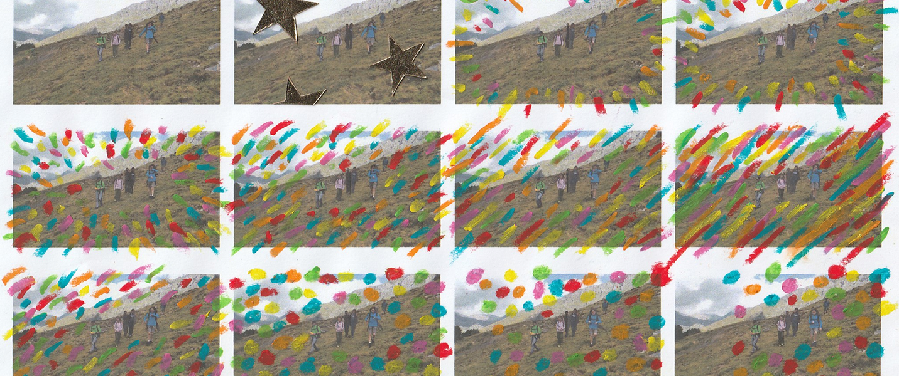
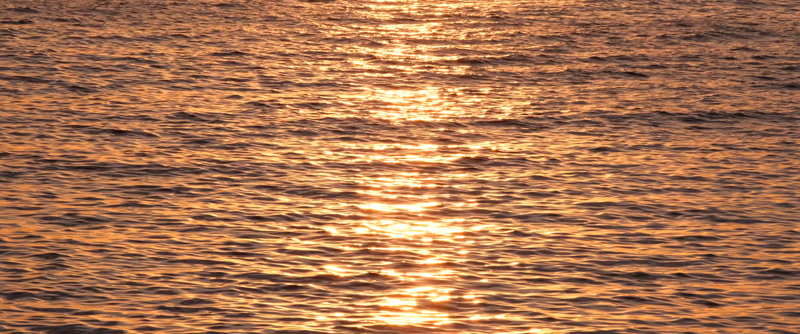
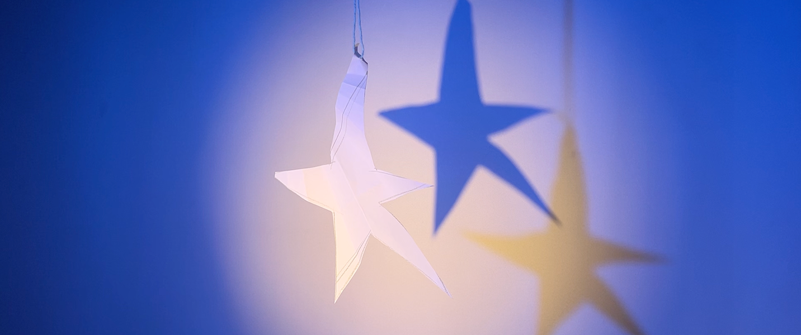
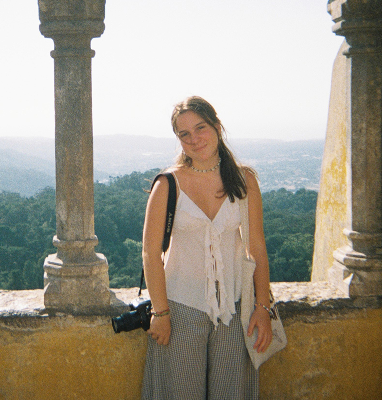

Les meves creacions neixen de l’observació i la sensibilitat. Exploro la relació entre imatge, emoció i entorn per crear narratives visuals íntimes que convidin a mirar el món d’una altra manera.

mirada sensible
observar les coses quotidianes amb delicadesa i descobrint la bellesa dels petits detalls.

emoció i presència
crear experiències visuals que motivin a aturar-se, mirar i sentir el món des d’una perspectiva més íntima.

impacte humà
explorar i crear imatges sobre els vincles entre la identitat, l’entorn, la memòria i les persones
els meus projectes

projecte fotogràfic on es recullen moments efímers on la llum del sol acaricia els ulls de diferents persones.
lights up, 2026

fotografies experimentals sobre el mar, la flora i el desastre mediambiental de la contaminació marina a les platges de Portugal.
o porto, 2026

remake audiovisual de l’escena final de la sèrie de televisió Normal People.
normal people, 2026

vídeo mixed media on els records de la infància es barregen amb el present i xoquen.
enyor, 2026

creació dels visuals del nou disc de la Mar Pujol, on diversos vídeos acompanyen les seves cançons plenes d’aigua i de vida.
aigua, 2026

retrat visual de les meves amigues, utilitzant molta llum i molts colors.
llums, 2026
sobre mi

berta moreu punsola
actualment soc estudiant de comunicació audiovisual i multimèdia i visc aprenent, explorant i creant.
m’interessa explorar les possibilitats de la imatge, trobant noves maneres d’explicar històries. a través de la fotografia i el llenguatge visual, busco transformar idees en imatges amb intenció, sensibilitat i personalitat.
aprenc fent, qüestionant i provant coses noves. per mi, cada projecte és una oportunitat per descobrir, créixer i continuar construint la meva pròpia mirada creativa.